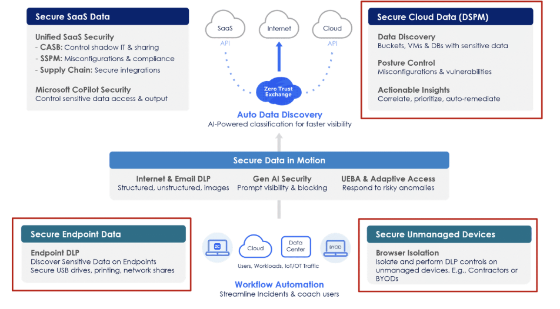
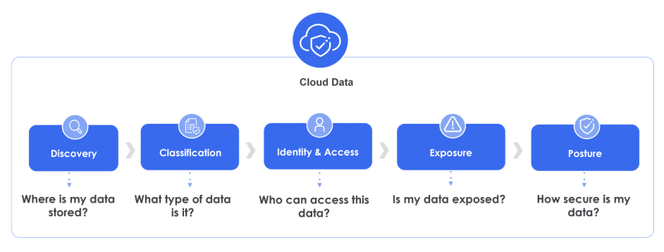
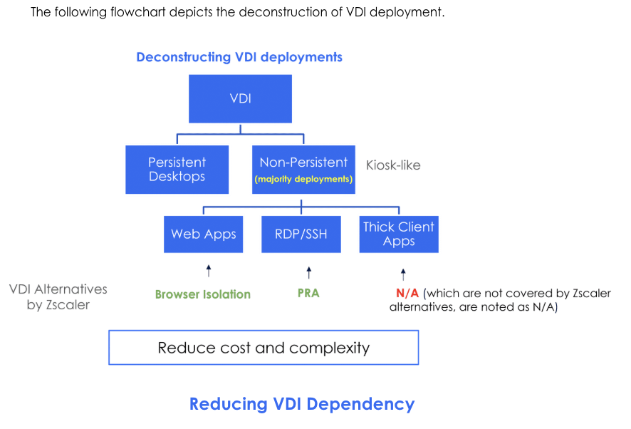

Three vectors — one unified approach
This lesson covers how Zscaler protects data across three distinct environments that sit outside traditional inline web traffic: public cloud storage, endpoint devices, and unmanaged/BYOD devices.

Data Security Posture Management
In today's digital-first world, businesses use cloud platforms like AWS, Azure, and Google Cloud to store, manage, and process data. While the cloud is flexible and scalable, it comes with security risks — data breaches, cyberattacks, and misconfigurations. Protecting sensitive information requires tools that go beyond traditional security measures.
Zscaler enhances cloud security through its zero-trust framework. The Zscaler Data Security Posture Management (DSPM) is a security approach that helps organisations identify, monitor, and protect sensitive data across their environment, ensuring it stays secure and compliant.
The 5-Step Cloud Data Security Flow

How DSPM Works
DSPM deploys two components — a Scanner and an Orchestrator:
- Scanner — scans data configurations stored at the cloud console; identifies sensitive data (Buckets, VMs, DBs); sends findings to the Orchestrator.
- Orchestrator — the final step; remediates identified issues through policies, guides, and actionable insights.
- Metadata stays local — metadata remains within the customer environment and is not transferred outside, preserving data sovereignty.
Endpoint DLP — protecting data on devices
Zscaler's Endpoint Data Loss Prevention (DLP) is a security measure designed to monitor, detect, and protect sensitive or critical data on endpoint devices — laptops, desktops, and mobile phones. It extends monitoring to activities such as printing, saving, uploading, and sharing.
Custom and predefined DLP engines detect sensitive data, allowing or blocking user actions. Endpoint DLP rules are triggered via the Zscaler Client Connector, ensuring incidents are logged even without network connectivity.
User Confirmation Feature
Instead of hard-blocking users, Zscaler offers a User Confirmation (soft block / "Confirm Allow") option within the ZIA Admin Portal. This requires users to justify a sensitive action before proceeding — allowing the operation but capturing their reasoning.
- Useful for educating users and reducing help desk overhead, especially when testing new rules or dictionaries
- Justifications come back to the admin as a feedback loop
- If a user chooses to justify and continue — the operation is allowed (not blocked)
- User Confirmation severity is not set to high for all printers — it is configurable per use case
Dashboard and Reports
The Endpoint DLP Report (navigate via Zscaler Internet Access → Analytics → Endpoint DLP Report) provides daily insights into end-user activity with sensitive data. It contains two tabs:
- Overview tab — Activities with Sensitive Data, total Incidents, Users Generating Incidents; Activities Distribution and Incidents Distribution by DLP Engines (PCI, Credit Card, SSN, ChatGPT CatchAll, etc.)
- Incidents tab — filter by Action Taken (Allow/Block/Exempted/Confirm Allow/Confirm Block), Severity, and Content Type (DLP Dictionaries, DLP Engines, ML Categories)
Browser Isolation and Privileged Remote Access
In today's flexible work environment, personal devices are increasingly used for work. While this enhances productivity, it creates vulnerabilities — unmanaged devices can become gateways for data breaches, malware attacks, or unauthorised access to sensitive information.

Mitigating Data Leakage from BYOD
- Browser isolation prevents file downloads and restricts clipboard access from unmanaged devices
- DLP policies can still be enforced on the isolated session — same policies as managed devices
- ZIA and ZPA direct traffic for SaaS and private apps respectively, even from unmanaged devices
- The dual approach achieves VDI-like controls in a cost-effective, agile, and scalable manner